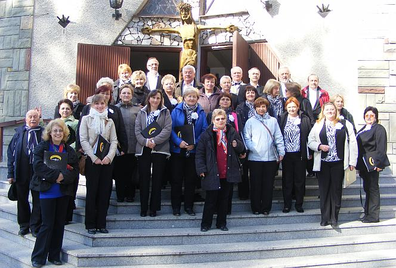

do aktualności
do aktualności2014-03-30
Nie ma lekko, trzeba wstawać a tak chce się spać, do tego zmienili nam czas (godzina do przodu hahaha). Camerata jest zdyscyplinowana, więc punktualnie udaje się na krótką próbę a właściwie rozśpiewkę i ...
maszeruje ( tak, tak maszeruje „na butach”) do kościoła p.w. Matki Bożej Królowej Polski w Zwierzyńcu na mszę, którą oprawiamy muzycznie a po mszy mamy koncert.
Śpiewamy z chóru. Na organach gra Zenon Kulik.
Koncert wypadł fajnie. Koniec naszych koncertów na tym wyjeździe. Jeszcze zdjęcie pamiątkowe ze Zwierzyńca.

Przebieramy się i idziemy zwiedzać Zwierzyniec.
Pan przewodnik bardzo ciekawie opowiada o mieście i jego historii.
Pogoda piękna, co trzeba wykorzystać, ale tak mało wygodnie.
Na szczęście dobrzy koledzy zawsze są „podporą”.
Popatrzcie jak tu pięknie, czyż Polska nie jest piękna???
Doszliśmy podziwiając widoki do… „Bramy do lasu”.
A za bramą cudny las, czyli Roztoczański Park Narodowy.
Co za widoki a jakie powietrze???
No cóż koniec wycieczki wracamy do domu. Jeszcze pożegnanie z przewodnikiem i właścicielem pensjonatu. My oczywiście żegnamy się ze śpiewem na ustach.
O nowy kierowca??? Z Ewą dojedziemy szczęśliwie i na czas :)))
Jest obiecana galeria
Album_Zamosc
do aktualności

 Prowadzenie strony: Małgorzata Wysocka-Cebula
Prowadzenie strony: Małgorzata Wysocka-Cebula